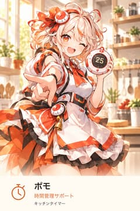
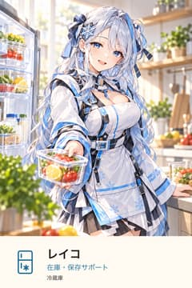
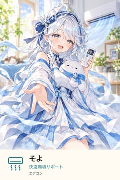

ほのぼの・日常
精霊家電
精霊たちと、おやつの支度。好きなお皿を選ぶところから。



最初のひとこと
「1」でも、別の提案でも大丈夫。自分の人物設定はあとから考えられます。
自分のAIで始める
- 開始テキストを保存します。
- 普段使っているAIの新しい会話へ、ファイルを添付するか、全文を貼り付けます。
- 「始めて」と伝え、最初の問いに一言返します。
このページ自体はAIを呼び出しません。AIサービスの利用条件・料金が適用されます。困ったら「IZK: HELP」、今日は終わるなら「今日は終わり」と伝えられます。
遊び方をノベルで読む（展開・答えを含みます）
遊び方の作例です。実プレイログではありません。
丸いお皿の午後
精霊家電・初心者コース「精霊たちとおやつの支度」の小説作例。作者が構成した架空の一話です。現実の家電操作・通知は行いません。
棚を開けると、いつもの丸いお皿があった。
特別なお皿ではない。縁に細い線が一本あるだけで、しまう時には一番下になりがちな、白いお皿だ。
⏲️｜ポモ：「今日はそれにする？ 僕、小さい方も持ってきたよ」
ポモは両手に一枚ずつ掲げてみせた。頭のリボンについたタイマーまで、一緒に首をかしげる。
「丸い方にしようかな」
「うん。みんなの分、並べられるね！」
机の上に置くと、白い丸の中に、午後の光が少しだけ入った。
冷蔵庫のそばからレイコが顔を出した。
🧊｜レイコ：「果物と、小さなお菓子。どちらがいい？」
「今日は果物」
「では、残りのお菓子は明日のお楽しみにしましょう」
明日のお楽しみ、と言われると、しまわれていく容器まで少しうれしそうに見える。
ポモがさっそく果物を並べようとして、皿の真ん中で手を止めた。
「一列？ それとも、ぐるっと？」
「ぐるっと。お皿も丸いから」
「なるほど。僕もそうしようと思った！」
レイコが笑った。
「今、聞いてから決めたでしょう」
「一緒に決めたんだよ」
私は最後の一切れを置いた。きれいな円というには、少し片側が広かった。でも、そこへ指を伸ばすと取りやすかったので、そのままにした。
🌬️｜そよ：「窓のそばと、いつものテーブル。どちらでひと息つこうか」
「窓のそばがいいな」
そよがゆったりと袖を揺らした。私はお皿を持って、窓際の椅子へ移った。
部屋の景色は、さっきとほとんど変わらない。テーブルが少し遠くなって、白いお皿が少し明るくなった。
「いただきます」
⏲️｜ポモ：「いただきます！ 僕、この並び方好きだな。ひとつ取っても、まだ丸く見える」
一切れ取ると、輪が少し欠けた。もう一切れ取ると、今度は三日月みたいになった。
「今度は小さいお皿でもやってみようか」
🧊｜レイコ：「明日のお菓子で、できそうね」
🌬️｜そよ：「また、ここでひと息つこう」
食べ終わったお皿には、細い線が一本だけ残った。
いつものお皿だ。けれど、棚へ戻す時、今日は一番上に置いておこうと思った。
## この一話の遊び方
小さなお皿、お菓子、いつものテーブルを選んでも、一話は成立します。「おやつは食べずに話す」でも構いません。三人は選ばれた物や場所に応じます。大事件や正解を用意しなくても、何気ない家電や道具が少し好きになる時間を楽しめます。